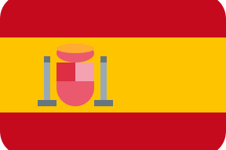

Fatih TÜRK
Analyste de Données.
Étudiant en 3e année de BUT Informatique en alternance, spécialisé en administration, gestion et exploitation des données. Je développe des automatisations, des connecteurs API et des agents IA, et je conçois des tableaux de bord à partir de données fiables.
Profil
Je transforme des données brutes en analyses claires et en outils utiles à la prise de décision.
Étudiant en troisième année de BUT Informatique, parcours administration, gestion et exploitation des données à l'IUT d'Annecy, je suis alternant chez Cats Power Design depuis août 2026. J'y développe en Python des connecteurs API (ERP, CRM, Zoho…) et des agents IA qui automatisent le traitement des demandes métier, en m'appuyant sur une première expérience en Data Analysis et Business Intelligence.
Découvrir mon parcoursCompétences techniques
Frontend
Backend & Logiciel
Data & BI
Outils & Méthodes
Savoir-être
Formation
Un parcours technique construit entre développement, bases de données et analyse de données.
BUT Informatique
Université de Savoie / IUT Annecy, France
Bachelor Universitaire de Technologie en informatique. Troisième année en alternance chez Cats Power Design.
Baccalauréat Français
Lycée Louis Lachenal - Argonay, France
Baccalauréat technologique STI2D - Option SIN (Systèmes d'Information et Numérique).
Expériences professionnelles
Des expériences professionnelles et universitaires centrées sur des solutions concrètes, fiables et utiles.
Alternant Développeur Python – Automatisation & IA
Cats Power Design - Seynod, France
Cartographie des besoins des différents services, documentation des flux entre outils et priorisation des automatisations à fort impact. Développement Python et maintenance de connecteurs API vers l'ERP, le CRM et Zoho Projects. Conception d'agents IA (serveur MCP connecté à Claude) qui analysent les demandes métier et orchestrent automatiquement les actions entre systèmes.
Stagiaire Data Analyst & Business Intelligence
La Boutique du Pro (LBDP) - Méry, France
Extraction et nettoyage de données issues d'une plateforme e-commerce (WooCommerce) et d'un logiciel de gestion comptable (MEG). Création de tableaux de bord interactifs Power BI pour le suivi des ventes, des stocks et des indicateurs de performance (KPIs).
Projet BDD & Dashboards Open Food Facts
USMB / IUT Annecy, France - Projet universitaire en équipe (SAÉ)
Création et optimisation d'une base de données relationnelle (OLTP) à partir de données brutes de l'Open Food Facts. Simulation de ventes massives et conception d'un modèle en étoile. Workflows Knime pour l'exploration des données et rapports analytiques en anglais.
Application Web & Gestion BDD
USMB / IUT Annecy, France - Projet universitaire en équipe (SAÉ)
Développement d'une application web avec Laravel en équipe de 5. Conception et modélisation de bases de données (MCD/MPD) et diagrammes BPMN. Création de tableaux de bord Power BI pour le suivi des indicateurs clés.
Application Gestion de Commandes
USMB / IUT Annecy, France - Projet universitaire en équipe (SAÉ)
Développement d'une application de gestion de commandes en C# (WPF/XAML). Conception et implémentation d'une interface utilisateur pour la prise de commandes et la gestion des stocks.
Employé Commercial
Leclerc - Seynod, France
Mise en rayon, suivi des stocks, présentation des produits et accompagnement des clients au sein d'une équipe en grande distribution.
Projets
Open Food Facts - BDD & Tableaux de Bord
Conception d'une base OLTP à partir de données Open Food Facts, modélisation en étoile pour l'analyse BI, workflows ETL Knime et tableaux de bord Power BI (ventes & composition produits).
Voir l’étude de casDrive sécurisé - Stockage & Partage de Fichiers
Application web de stockage et de partage de fichiers chiffrés. Chaque fichier est protégé par AES-256-GCM, tandis que sa clé est distribuée aux utilisateurs autorisés avec RSA-2048.
Voir l’étude de casSAÉ Leboncoin Location Vacances - Application Web
Plateforme de location de vacances type LeBonCoin développée en équipe de 5 avec Laravel. Conception complète de la base de données et modélisation des processus métier.
Voir l’étude de casSAÉ Leboncoin Location Vacances - Business Intelligence
Conception d'un Data Warehouse en schéma étoile et création de tableaux de bord Power BI pour le suivi du chiffre d'affaires des locations.
Voir l’étude de casPortfolio
Portfolio personnel orienté Data / BI avec design responsive, filtrage dynamique des projets, switch multilingue et animations fluides.
Découvrir le projetSibilia - Système de Gestion de Commandes
Application desktop de gestion commerciale développée en WPF/C#. Gestion des commandes, clients, plats et stocks avec architecture MVVM.
Voir l’étude de casLabyrinthe - Jeu vidéo 2D
Moteur de jeu d'arcade 2D en C# / WPF : boucle de jeu, collisions et IA des ennemis.
Voir l’étude de casLangues
Français
Langue maternelle
Turc
Langue maternelle
Anglais
B1 - Intermédiaire

Espagnol
A2 - Élémentaire
Centres d'intérêt
Manga
One Piece, Chainsaw Man
Jeux Vidéo
FPS, Jeux de construction
Fitness
Musculation
Références
Stéphanie VIBRAC
Enseignante d'Anglais, Coordinatrice Internationale
Université de Savoie / IUT Annecy, France
Vincent COUTURIER
Professeur SQL et POO, Chercheur à l'Université de Savoie
Université de Savoie / IUT Annecy, France
Construisons quelque chose d'utile à partir des données.
Contactez-moi
Disponible pour échanger autour de la data, de l'automatisation ou de l'IA.